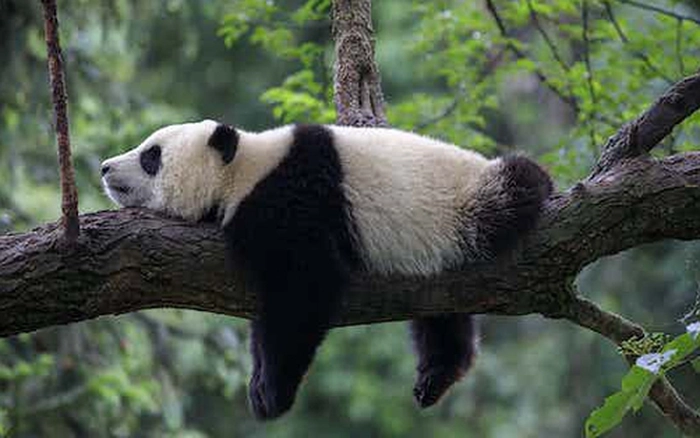
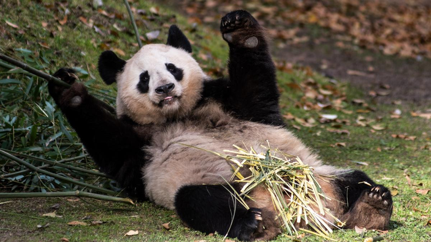
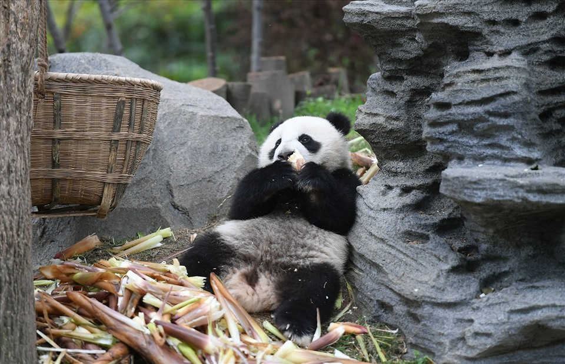

🌿 Thông tin mở đầu:
Gấu trúc khổng lồ là loài động vật có vú thuộc họ Gấu (Ursidae), nổi tiếng với bộ lông đen trắng và vẻ ngoài đáng yêu. Chúng sinh sống chủ yếu tại các khu rừng tre trúc ở vùng núi cao phía tây nam Trung Quốc.

📏 Đặc điểm nổi bật:
Kích thước: Cao khoảng 1,2 - 1,9 mét, nặng từ 70 đến 160 kg.
Màu sắc: Bộ lông trắng kết hợp với các mảng đen quanh mắt, tai, chân và vai.
Tuổi thọ: Trung bình từ 20 - 30 năm trong điều kiện nuôi nhốt.

🍃 Chế độ ăn uống:
Gấu trúc khổng lồ ăn tới 99% là tre.
Mỗi ngày chúng có thể tiêu thụ từ 12 đến 38 kg tre để đáp ứng nhu cầu dinh dưỡng.
Thỉnh thoảng, chúng cũng ăn trứng, côn trùng hoặc động vật nhỏ.

🛡️ Bảo tồn:
Gấu trúc khổng lồ từng nằm trong danh sách các loài động vật nguy cấp, nhưng nhờ các nỗ lực bảo tồn, hiện nay chúng đã được nâng cấp lên mức "dễ tổn thương" (Vulnerable).
Trung Quốc đã thành lập nhiều khu bảo tồn và chương trình nhân giống để duy trì và phát triển quần thể gấu trúc.
Khu bảo tồn Gấu trúc lớn Tứ Xuyên

🌍 Vai trò trong văn hóa:
Gấu trúc khổng lồ là biểu tượng quốc gia của Trung Quốc.
Chúng thường được sử dụng trong "ngoại giao gấu trúc" (Panda Diplomacy), qua đó Trung Quốc tặng hoặc cho mượn gấu trúc tới các quốc gia khác như một biểu hiện thiện chí.